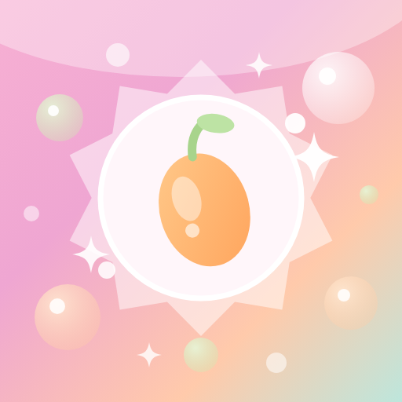

Add PoppingMango Sources to Mana
Opening Mana…
Open in Mana
Still nothing? Update Mana, or add the repository by hand under Discover → Repositories → Add Repo:
https://poppingmangosources.github.io/popmango-extensions-mana/test
See every source